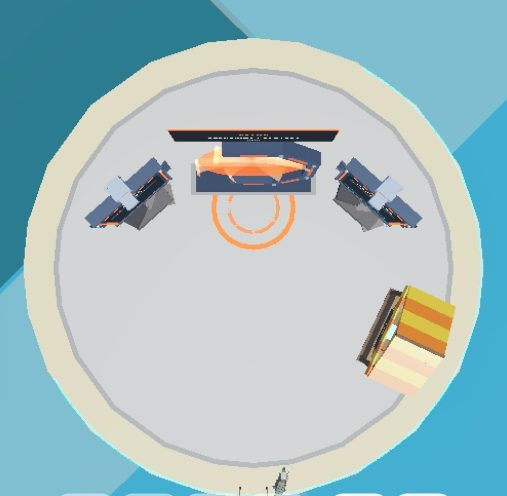
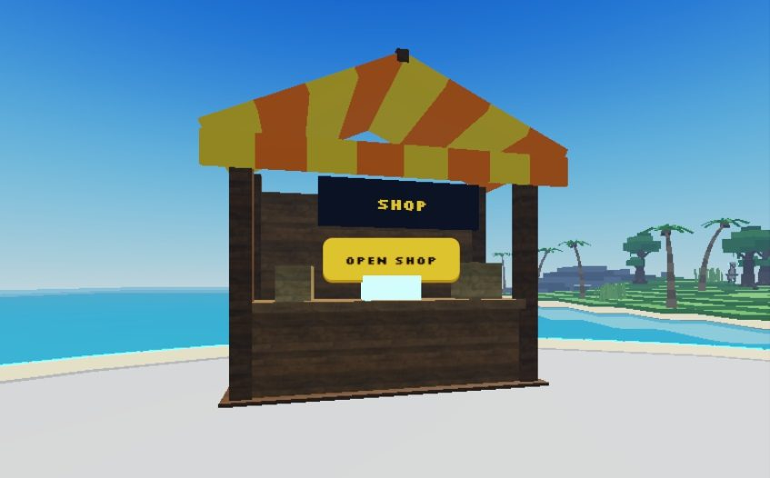

Two picks: where the stall stands, and how OPEN SHOP shows on it. Every picture is a real Studio capture of the live stall, moved on the client only. Top views: portal at the top, bridge at the bottom, the yellow cross is the plaza centre (930, 930), which is also the centre of the spawn arc.


All three: shows only within the stall's range (24 studs, as now), hides while the Shop is open, tap or click opens the Shop as today. The current screen button above JUMP stays in the code behind a switch, off by default.